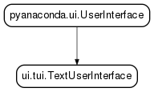

pyanaconda.ui.tui package¶
Subpackages¶
- pyanaconda.ui.tui.hubs package
- pyanaconda.ui.tui.simpleline package
- pyanaconda.ui.tui.spokes package
- Submodules
- pyanaconda.ui.tui.spokes.askvnc module
- pyanaconda.ui.tui.spokes.langsupport module
- pyanaconda.ui.tui.spokes.network module
- pyanaconda.ui.tui.spokes.password module
- pyanaconda.ui.tui.spokes.progress module
- pyanaconda.ui.tui.spokes.shell_spoke module
- pyanaconda.ui.tui.spokes.software module
- pyanaconda.ui.tui.spokes.source module
- pyanaconda.ui.tui.spokes.storage module
- pyanaconda.ui.tui.spokes.time_spoke module
- pyanaconda.ui.tui.spokes.user module
- pyanaconda.ui.tui.spokes.warnings_spoke module
- Module contents
Submodules¶
pyanaconda.ui.tui.tuiobject module¶
-
class
pyanaconda.ui.tui.tuiobject.ErrorDialog(app, message)¶ Bases:
pyanaconda.ui.tui.simpleline.base.UIScreenDialog screen for reporting errors to user.
Parameters: - app (instance of App class) – the running application reference
- message (str) – the message to show to the user
-
input(args, key)¶ This dialog is closed by any input.
And causes the program to quit.
-
prompt(args=None)¶
-
refresh(args=None)¶
-
title= 'Error'¶
-
class
pyanaconda.ui.tui.tuiobject.PasswordDialog(app, device)¶ Bases:
pyanaconda.ui.tui.simpleline.base.UIScreenDialog screen for password input.
Parameters: app (instance of App class) – the running application reference -
answer¶ The response can be None (no response) or the password entered.
-
input(args, key)¶
-
prompt(args=None)¶
-
refresh(args=None)¶
-
title= 'Password'¶
-
-
class
pyanaconda.ui.tui.tuiobject.TUIObject(app, data)¶ Bases:
pyanaconda.ui.tui.simpleline.base.UIScreen,pyanaconda.ui.common.UIObjectBase class for Anaconda specific TUI screens. Implements the common pyanaconda.ui.common.UIObject interface
-
refresh(args=None)¶ Put everything to display into self.window list.
-
showable¶
-
title= 'Default title'¶
-
-
class
pyanaconda.ui.tui.tuiobject.YesNoDialog(app, message)¶ Bases:
pyanaconda.ui.tui.simpleline.base.UIScreenDialog screen for Yes - No questions.
Parameters: - app (instance of App class) – the running application reference
- message (unicode) – the message to show to the user
-
answer¶ The response can be True (yes), False (no) or None (no response).
-
input(args, key)¶
-
prompt(args=None)¶
-
refresh(args=None)¶
-
title= 'Question'¶
Module contents¶
-
class
pyanaconda.ui.tui.TextUserInterface(storage, payload, instclass, productTitle='Anaconda', isFinal=True, quitMessage=None)¶ Bases:
pyanaconda.ui.UserInterfaceThis is the main class for Text user interface.

For detailed description of the arguments see the parent class.
Parameters: - storage (instance of pyanaconda.Storage) – storage backend reference
- payload (instance of payload handler) – payload (usually dnf) reference
- instclass (instance of install class) – install class reference
- productTitle (str) – the name of the product
- isFinal (bool) – Boolean that marks the release as final (True) or development (False) version.
- quitMessage (str) – The text to be used in quit dialog question. It should not be translated to allow for change of language.
-
ENVIRONMENT= 'anaconda'¶
-
basemask= 'pyanaconda.ui'¶
-
basepath= '/builddir/anaconda/pyanaconda/ui'¶
-
meh_interface¶
-
path= '/tmp/updates/pyanaconda/ui'¶
-
pathlist= {'/builddir/anaconda/pyanaconda/ui', '/usr/lib64/python3.5/site-packages/pyanaconda/ui', '/usr/lib/python3.5/site-packages/pyanaconda/ui', '/tmp/updates/pyanaconda/ui'}¶
-
paths= {'hubs': [('pyanaconda.ui.tui.hubs.%s', '/builddir/anaconda/pyanaconda/ui/tui/hubs'), ('pyanaconda.ui.tui.hubs.%s', '/usr/lib64/python3.5/site-packages/pyanaconda/ui/tui/hubs'), ('pyanaconda.ui.tui.hubs.%s', '/usr/lib/python3.5/site-packages/pyanaconda/ui/tui/hubs'), ('pyanaconda.ui.tui.hubs.%s', '/tmp/updates/pyanaconda/ui/tui/hubs')], 'categories': [('pyanaconda.ui.categories.%s', '/builddir/anaconda/pyanaconda/ui/categories'), ('pyanaconda.ui.categories.%s', '/usr/lib64/python3.5/site-packages/pyanaconda/ui/categories'), ('pyanaconda.ui.categories.%s', '/usr/lib/python3.5/site-packages/pyanaconda/ui/categories'), ('pyanaconda.ui.categories.%s', '/tmp/updates/pyanaconda/ui/categories')], 'spokes': [('pyanaconda.ui.tui.spokes.%s', '/builddir/anaconda/pyanaconda/ui/tui/spokes'), ('pyanaconda.ui.tui.spokes.%s', '/usr/lib64/python3.5/site-packages/pyanaconda/ui/tui/spokes'), ('pyanaconda.ui.tui.spokes.%s', '/usr/lib/python3.5/site-packages/pyanaconda/ui/tui/spokes'), ('pyanaconda.ui.tui.spokes.%s', '/tmp/updates/pyanaconda/ui/tui/spokes')]}¶
-
run()¶ Run the interface. This should do little more than just pass through to something else’s run method, but is provided here in case more is needed. This method must be provided by all subclasses.
-
setup(data)¶ Construct all the objects required to implement this interface. This method must be provided by all subclasses.
-
showDetailedError(message, details, buttons=None)¶
-
showError(message)¶ Display an error dialog with the given message. After this dialog is displayed, anaconda will quit. There is no return value. This method must be implemented by all UserInterface subclasses.
In the code, this method should be used sparingly and only for critical errors that anaconda cannot figure out how to recover from.
-
showYesNoQuestion(message)¶ Display a dialog with the given message that presents the user a yes or no choice. This method returns True if the yes choice is selected, and False if the no choice is selected. From here, anaconda can figure out what to do next. This method must be implemented by all UserInterface subclasses.
In the code, this method should be used sparingly and only for those times where anaconda cannot make a reasonable decision. We don’t want to overwhelm the user with choices.
When cmdline mode is active, the default will be to answer no.
-
sitepackages= ['/usr/lib64/python3.5/site-packages/pyanaconda/ui', '/usr/lib/python3.5/site-packages/pyanaconda/ui']¶
-
tty_num¶
-
updatepath= '/tmp/updates/pyanaconda/ui'¶